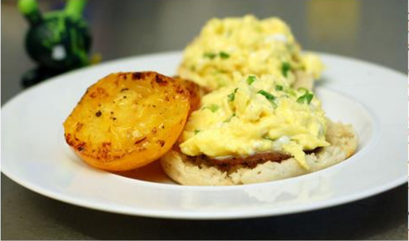

Home

A community caft serving home cooked, locally sourceed organic food
With stunning views of the ocean, Example Cafe offers the perfect environment to unwind and rechange the batteries.
Our menu offers a wide range of breakfasts, brunches and lunches, including a range of vegetarian options.
Whether you sip on a fresh, hot coffr or a cooling smoothie, you never need to feel rushed. Relax with friends or just watch the world go by.
This weekend's special brunch
This weekend, our season of special brunches continues with scrambled egg on an English muffin. Not for the faint-hearled the secret to these eggs is that thay are made with half cream and cooked in butter with no more than for egg in the pan at a time.